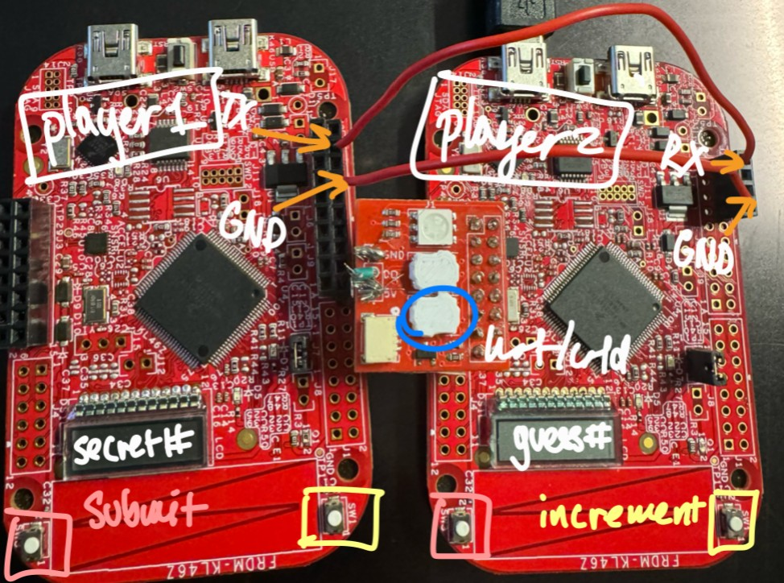
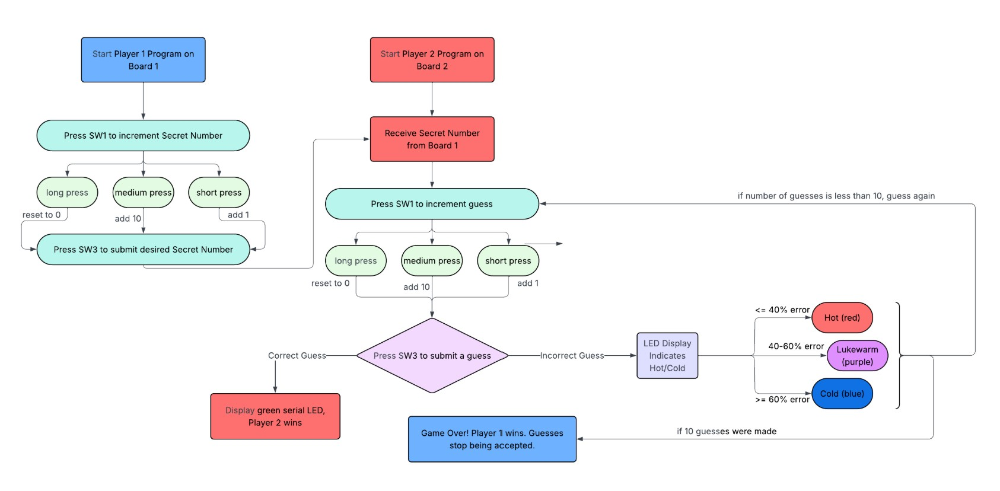

EMBEDDED SYSTEMS · TEAM PROJECT
UART Hot & Cold Number-Guessing Game
Built a two-board embedded game using UART communication, LCD displays, physical button inputs, interrupts, and serial LEDs to provide real-time hot-and-cold feedback as a player guesses a secret number.

01
System Overview
This project implements a two-player Hot & Cold number-guessing game across two FRDM-KL46Z development boards. Player 1 selects a secret number on Board 1, which is transmitted to Board 2 over UART.
Player 2 submits guesses from the second board and receives color-coded feedback indicating how close each guess is to the secret number. The game continues until Player 2 guesses correctly or reaches the ten-guess limit.

02
My Role
This was a team project, and my primary responsibility was implementing the LCD functionality along with portions of the interrupt and concurrency logic.
I worked on displaying user-entered values and game state on the board's LCD while coordinating user input with the rest of the system without blocking ongoing communication or processing.
I also worked to integrate and debug each individual subsystem as they were combined into the final two-board implementation.
LCD display functionality
Interrupt-driven input handling
Concurrency logic
System integration
Hardware debugging and testing
03
See It in Action
Watch the complete hardware demonstration.
Full system demonstration. Click to watch the project running on physical hardware.
06
Challenges & Debugging
Integrating two microcontrollers, asynchronous user inputs, UART communication, displays, and serial LEDs introduced several bugs that only became clear through incremental hardware testing.
Getting UART Working in Both Directions
Early in development, UART communication worked reliably in one direction but not in the reverse direction. This made it difficult to tell whether the problem was in transmission, reception, message framing, or the game logic itself.
We debugged the interface incrementally rather than testing the entire game at once. We first transmitted known character sequences and used the boards' LEDs to indicate when individual characters were sent and received. Once character transmission was reliable, we tested the integer-to-character conversion and reconstructed received integers one digit at a time.
We also discovered a hardware resource conflict: the serial LED and UART2 transmitter were assigned to the same Port E pin. We moved communication to UART1 so both peripherals could operate simultaneously.
Unexpected Hardware Failure
During hardware integration, one development board became abnormally hot and stopped behaving correctly. Because we could not conclusively identify the exact electrical failure after the fact, we treated it as a potential wiring or pin-configuration problem rather than assuming a specific cause.
We replaced the affected board and carefully rechecked power, ground, UART connections, and GPIO assignments before reconnecting the full system. We also brought peripherals back online incrementally instead of reconnecting everything at once.
Integrating Independently Working Subsystems
Buttons, UART, the LCD, and serial LEDs all worked independently before the full system was assembled, but integration introduced new interactions between peripherals and timing-sensitive code.
We used an incremental integration strategy: button behavior was first verified with onboard LEDs, UART was tested with known messages, LCD updates were checked visually, and LED feedback was tested across a range of simulated percent errors. Only after each subsystem behaved correctly did we combine them into the final game.